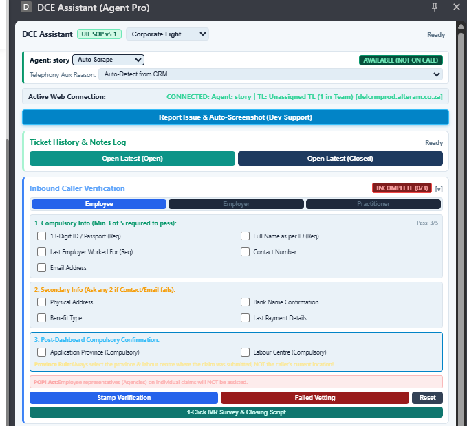

1. System Overview & Table of Contents
The DCE Assistant Extension is the official contact center operational companion built for Alteram floor agents and team leaders servicing the Department of Employment and Labour (DEL). It automates CRM ticket indexing, enforces strict POPI Act inbound verification protocols, standardizes 1-tap call note generation, and connects with telephony queues.
| Module | Training Section | Key Agent Competency |
|---|---|---|
| Section 2 | Launching DCE Assistant & Telephony Status | Chrome Side Panel, Mic Permissions, Telephony Availability |
| Section 3 | Active Web Connection & Ticket History Navigation | Live CRM Site Detection, Fast Ticket Reopen, Notes Log |
| Section 4 | Inbound Caller Verification (SOP §1.2 & POPI Act) | 3-Role Vetting (Employee/Employer/Practitioner), Compulsory Checks |
| Section 5 | 1-Tap Categorization & SOP v5.1 Routing Card | Department Presets, Probing Questions, Document Checklists |
| Section 6 | Call Notes Staging Area & Dropdown Toolbar | Standard Notes Format, Dynamic Dates (TODAY/+7DAYS), Tokens |
| Section 7 | Flag Incomplete & Straight-to-Save Directive | Handling Incomplete Records, TL Escalation, Quick Save |
| Section 8 | HQ Admin Switchboard & Dev Support Helpdesk | Real-Time Policy Toggles, Auto-Screenshot Bug Dispatch |
2. Launching DCE Assistant & Telephony Status
- Open Google Chrome and locate the DCE Assistant icon on the browser toolbar.
- Click the extension icon to dock the assistant in the Chrome Side Panel alongside DEL CRM (
delcrmprod.alteram.co.za). - Select your preferred interface theme from the header dropdown (Corporate Light recommended for floor operations).
- Verify Telephony Presence: Observe the presence indicator in the top green bar. When logged in and ready for calls, the badge will display AVAILABLE (NOT ON CALL) in solid green.
IMPORTANT: Microphone Site Permissions & Telephony Sync
If Chrome microphone access is toggled off or blocked, the extension will flag an alert:
Disconnected (Microphone Required). Ensure site permissions in Chrome allow microphone access for telephony routing.

Figure 2.1: DCE Assistant Agent Pro Top View showing Telephony Presence & Web Connection